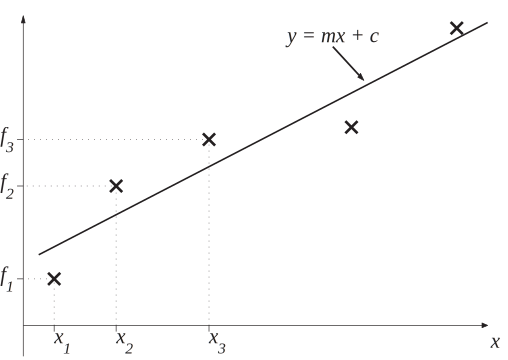
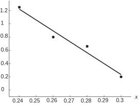

4 Polynomial approximations - experimental data
You may well have experience in carrying out an experiment and then trying to get a straight line to pass as near as possible to the data plotted on graph paper. This process of adjusting a clear ruler over the page until it looks “about right" is fine for a rough approximation, but it is not especially scientific. Any software you use which provides a “best fit" straight line must obviously employ a less haphazard approach.
Here we show one way in which best fit straight lines may be found.
Best fit straight lines
Let us consider the situation mentioned above of trying to get a straight line to be as near as possible to experimental data in the form , , , .
Figure 3

We want to minimise the overall distance between the crosses (the data points) and the straight line. There are a few different approaches, but the one we adopt here involves minimising the quantity
Each term in the sum measures the vertical distance between a data point and the straight line. (Squaring the distances ensures that distances above and below the line do not cancel each other out. It is because we are minimising the distances squared that the straight line we will find is called the least squares best fit straight line.) In order to minimise we can imagine sliding the clear ruler around on the page until the line looks right; that is we can imagine varying the slope and -intercept of the line. We therefore think of as a function of the two variables and and, as we know from our earlier work on maxima and minima of functions, the minimisation is achieved when
(We know that this will correspond to a minimum because has no maximum, for whatever value takes we can always make it bigger by moving the line further away from the data points.)
Differentiating with respect to and gives
respectively. Setting both of these quantities equal to zero (and cancelling the factor of 2) gives a pair of simultaneous equations for and . This pair of equations is given in the Key Point below.
Key Point 3
The least squares best fit straight line to the experimental data
is
where and are found by solving the pair of equations
(The term is simply equal to the number of data points, .)
Example 7
An experiment is carried out and the following data obtained:
Obtain the least squares best fit straight line, , to these data. Give and to 2 decimal places.
Solution
For a hand calculation, tabulating the data makes sense:
The quantity
counts the number of data points and in this case is equal to 4.
It follows that the pair of equations for
and
are:
Solving these gives and and we see that the least squares best fit straight line to the given data is
Figure 4 shows how well the straight line fits the experimental data.
Figure 4

Example 8
Find the best fit straight line to the following experimental data:
Solution
In order to work out all of the quantities appearing in the pair of equations we tabulate our calculations as follows
The quantity counts the number of data points and is in this case equal to .
Hence our pair of equations is
Solving these equations gives and and this means that our best fit straight line to the given data is
Task!
An experiment is carried out and the data obtained are as follows:
Obtain the least squares best fit straight line, , to these data. Give and to 2 decimal places.
Tabulating the data gives
The quantity
counts the number of data points and in this case is equal to 4.
It follows that the pair of equations for
and
are:
Solving these gives and and we see that the least squares best fit straight line to the given data is
Task!
Power output of a semiconductor laser diode, operating at C, as a function of the drive current is measured to be
(Here and are measured in mA and mW respectively.)
It is known that, above a certain threshold current, the laser power increases linearly with drive current. Use the least squares approach to fit a straight line, , to these data. Give and to 2 decimal places.
Tabulating the data gives
The quantity
counts the number of data points and in this case is equal to 4.
It follows that the pair of equations for
and
are:
Solving these gives and and we see that the least squares best fit straight line to the given data is